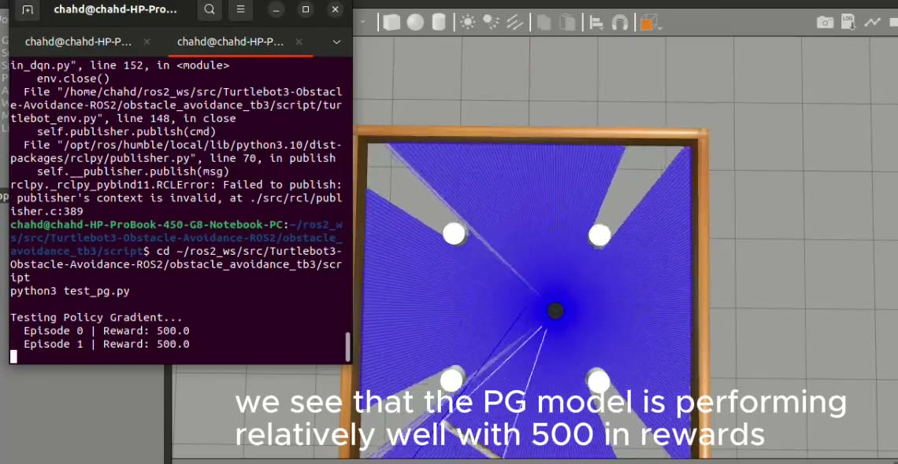

In progressP1
In progressP1Automated robotic force measurement for recycled shoes
Open folder P2
P2Detecting singularities in dual-arm cable manipulation
Open folder P3
P3Autonomous shoe inspection on a UR3e
Open folder
P4Teaching a TurtleBot3 to navigate with deep RL
Open folderWhere I've worked
Research, team-lead and project roles, each on real robot hardware.
Engineering project, robotic force measurement
Two UR3e arms that pull the sole off recycled shoes, measure the separation force and record a dataset for every pull.
Research Intern
Closed-loop shape servoing on a dual-arm Franka FR3 with a 15-camera OptiTrack system. Online deformation-Jacobian estimation and SVD diagnostics for singularity detection.
Team Lead, defect inspection
Led an 8-person team taking a perception-to-manipulation pipeline from Gazebo to a real UR3e with a RealSense D435.
Technical expertise
Tools I have used on real hardware, not only in coursework.
Robotics & control
- ROS2 Humble, MoveIt2, OMPL
- Jacobian / shape-servoing control
- Visual servoing
- Real-time positioning & tracking
- Hand-eye calibration
AI & vision
- PyTorch, OpenCV
- CNN, U-Net segmentation
- RL: PG, DQN, Actor-Critic
- Imitation learning
- Sim-to-real transfer
Software
- Python, C++
- MATLAB / Octave
- Gazebo, RViz
- Git
- CATIA
Hardware
- Franka FR3 (dual-arm)
- Universal Robots UR3e (dual-arm)
- OnRobot 2FG7 gripper
- TurtleBot3
- Intel RealSense D435
- OptiTrack (15 cameras)
Education & languages
- 2024 – 2027Master's in Mechanical EngineeringSigma Clermont (INP), Innovation, Mechanisms & Robotics Currently in my final year. Robot kinematics & dynamics · Reinforcement learning · Computer vision · Real-time systems · ROS2 · Machine & deep learning. Expected graduation July 2027.
- 2022 – 2024CPGE MPSI / MPIntensive preparatory classes, Morocco Advanced mathematics, physics and numerical modelling.
- 2021 – 2022Baccalaureate, Mathematical SciencesWith honours
Languages
Working style
Autonomous and rigorous. I care about understanding why a robot fails, and I like turning a messy hardware result into a clear diagnosis.
Let's build intelligent robots together.
I'm looking for a 5–6 month end-of-studies internship in computer vision, manipulation or robot learning. My start date is flexible.